Turnkey plants & machinery for every industry
Explore innovative, end-to-end customised engineering solutions designed to optimise performance, efficiency and scalability across industries.
Browse the machine catalogue →All industries
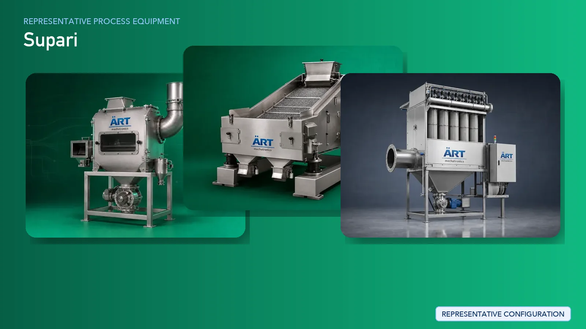
Supari
Supari (betelnut) processing plays a critical role in the production of pan masala, mouth fresheners, and flavored…
View details →
Pan Masala
Pan masala manufacturing is a highly specialized process that requires precision in ingredient handling, uniform…
View details →
Sweet Supari
Sweet supari, also known as flavored betelnut, is a popular mouth freshener product widely consumed across global…
View details →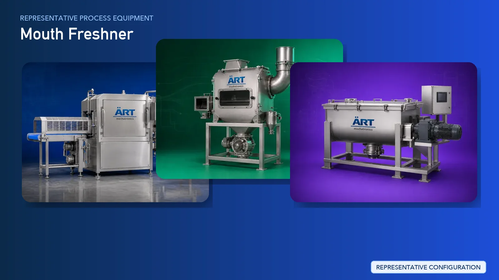
Mouth Freshner
Mouth fresheners, commonly known as mukhwas, are widely consumed FMCG products made using a blend of seeds,…
View details →
Silver Coated Flavoured Cardomom (ELAICHI)
Silver coated elaichi (cardamom) is a premium mouth freshener product widely used in the FMCG and confectionery…
View details →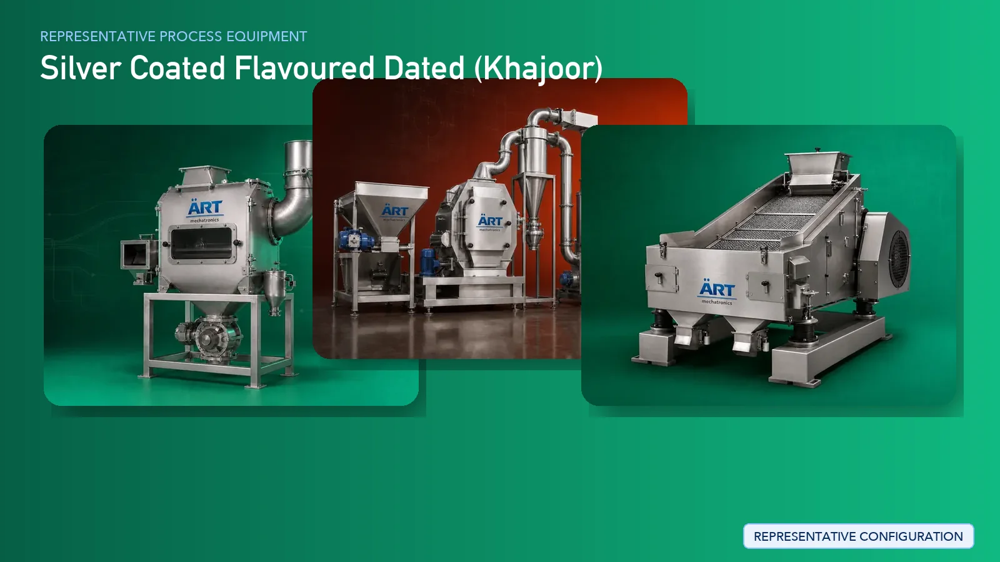
Silver Coated Flavoured Dated (KHAJOOR)
Silver coated flavoured dates are premium value-added products widely consumed as mouth fresheners, festive treats,…
View details →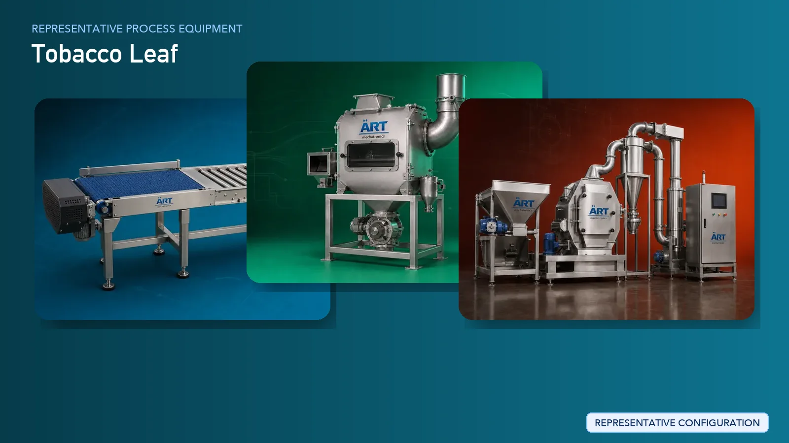
Tobacco Leaf
Raw tobacco leaf processing is a critical upstream operation in the tobacco supply chain, where harvested leaves are…
View details →
Cigarette
Cigarette manufacturing is a highly automated and precision-driven industrial process that involves tobacco…
View details →
Cigar Manufacturing Plant & Machinery Solutions
Cigar manufacturing is a specialized process that combines precise tobacco preparation with controlled rolling,…
View details →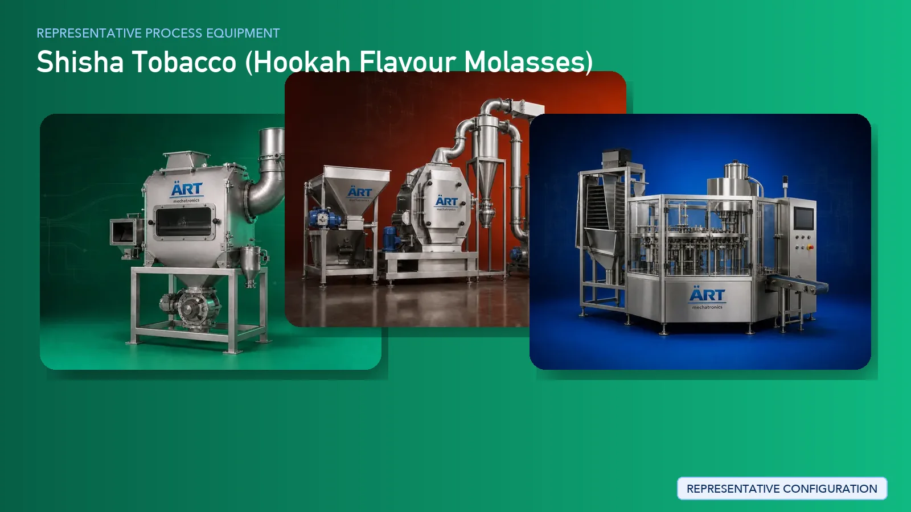
Shisha Tobacco
Shisha tobacco, also known as hookah flavour molasses, is a premium processed product made by blending tobacco with…
View details →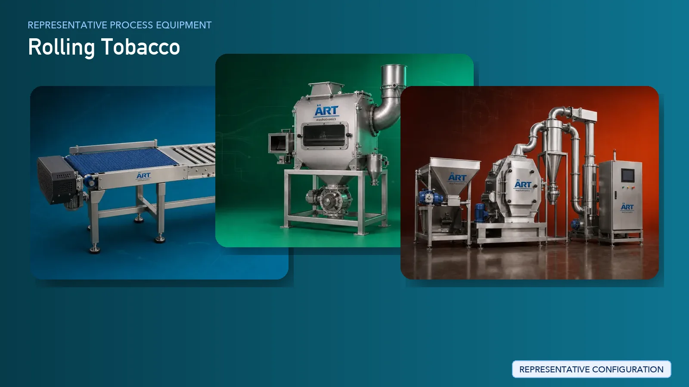
Rolling Tobacco
Rolling tobacco, also known as fine cut tobacco, is a processed product designed for manual cigarette rolling…
View details →Dokha
Dokha tobacco is a finely processed, high-strength tobacco product widely used in traditional smoking applications.…
View details →
Oral Pouches
Oral pouches, including nicotine pouches, caffeine pouches, snus, snuff, and filter khaini, are rapidly growing…
View details →
Khaini Chewing Tobacco
Khaini, a widely consumed chewing tobacco product, is manufactured through precise blending of processed tobacco with…
View details →
Zarda Chewing Tobacco
Zarda is a flavored chewing tobacco product widely used alongside pan masala and mouth fresheners. The manufacturing…
View details →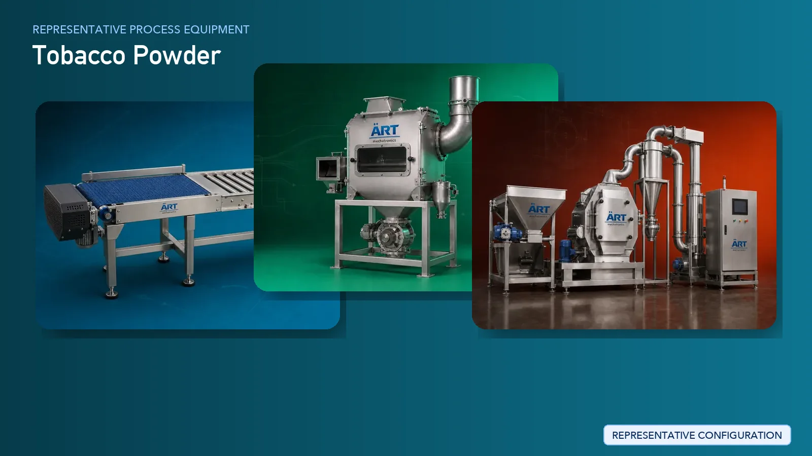
Tobacco Powder
Tobacco powder, commonly known as gul or manjan, is a finely processed product used in traditional oral applications.…
View details →
Htp / Hnb
Heated Tobacco Products (HTP), also known as Heat-Not-Burn (HNB) products, represent a rapidly growing segment in the…
View details →
Spices Powder Processing Plant & Machinery
Spice powder manufacturing is a critical segment in the global food industry, covering products such as turmeric…
View details →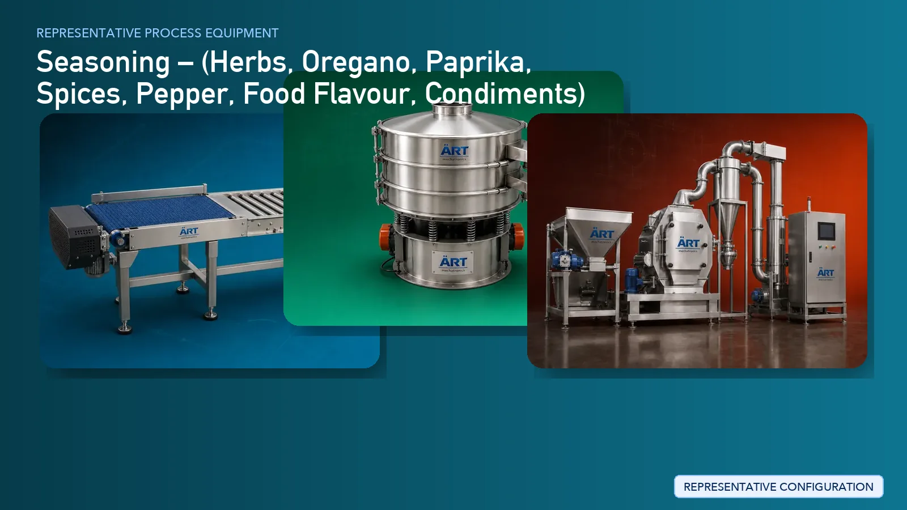
Seasoning
Seasoning powders are widely used across the food industry in products such as snacks, chips, noodles, ready-to-eat…
View details →
Feed
Animal feed manufacturing is a large-scale industrial process that involves precise formulation, grinding, mixing,…
View details →
Chips & Crisps
Chips and crisps manufacturing is a fast-growing segment in the global snack food industry, covering products such as…
View details →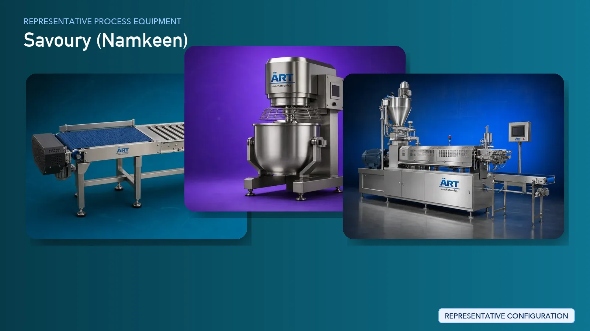
Savoury (NAMKEEN)
Namkeen (savoury snacks) manufacturing is a fast-growing segment in the global FMCG food industry, covering products…
View details →
Flavoured Peanut
Peanut processing is a rapidly growing segment in the global snack food industry, covering products such as salted…
View details →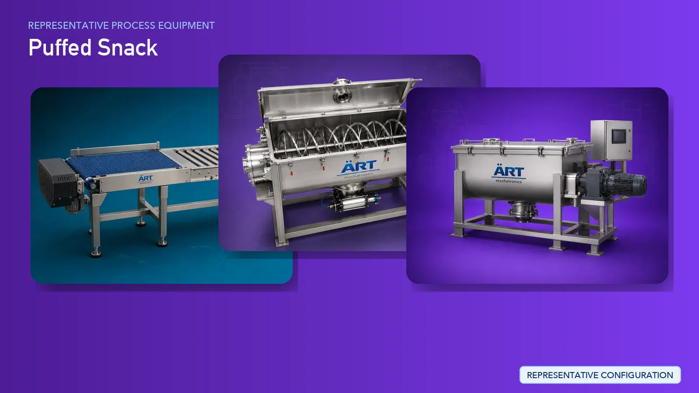
Puffed Snack
Puffed snacks, also known as extruded snacks, are one of the fastest-growing segments in the global FMCG industry.…
View details →Foxnut (MAKHANA)
Foxnut, commonly known as makhana, is a premium healthy snack gaining rapid popularity in global markets. Products…
View details →Popcorn
Popcorn is one of the most popular ready-to-eat snack products worldwide, available in various formats such as butter…
View details →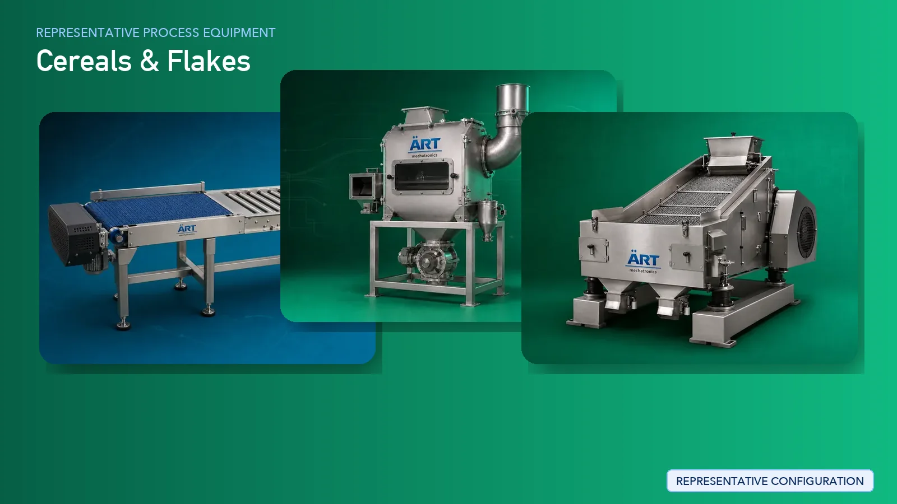
Cereals & Flakes
Breakfast cereals, including corn flakes, wheat flakes, and multigrain cereals, are a major segment in the global food…
View details →
Pasta Production Plant & Machinery Solutions
Pasta is one of the most widely consumed food products globally, available in various forms such as penne, rotini,…
View details →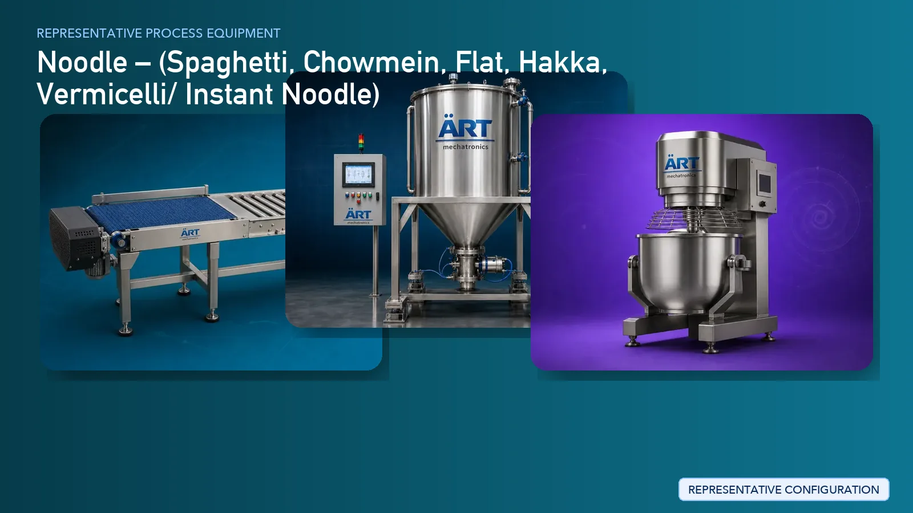
Noodle Production Plant & Machinery Solutions
Noodles are one of the most widely consumed food products globally, available in multiple formats such as spaghetti,…
View details →
Instant Noodle
Instant noodles are one of the most widely consumed ready-to-cook food products globally, offering convenience, long…
View details →
Dry Fruit
Dry fruits and nuts are a premium segment in the global food industry, including products such as dates, cashew nuts,…
View details →Ground Nut
Groundnut (peanut) processing is a highly versatile segment in the food and agro-processing industry, producing…
View details →
Areca Nut
Areca nut processing, also known as betelnut or supari processing, is a specialized agro-processing segment that…
View details →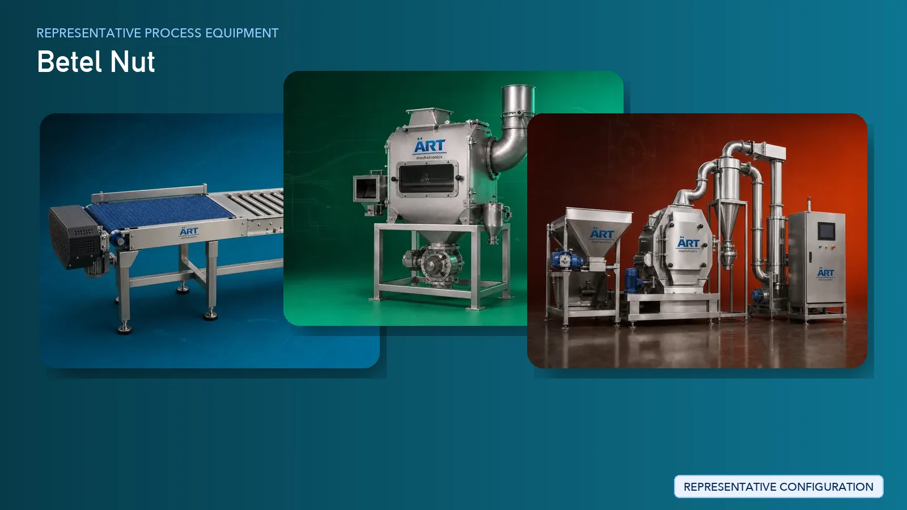
Betel Nut
Betel nut (supari) processing is a key segment in the pan masala and mouth freshener industry. The process involves…
View details →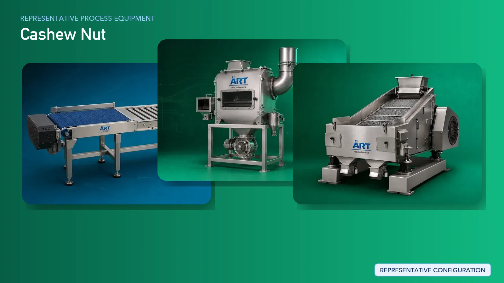
Cashew Nut
Cashew processing is a high-value agro-processing industry where raw cashew nuts (in shell) are converted into edible…
View details →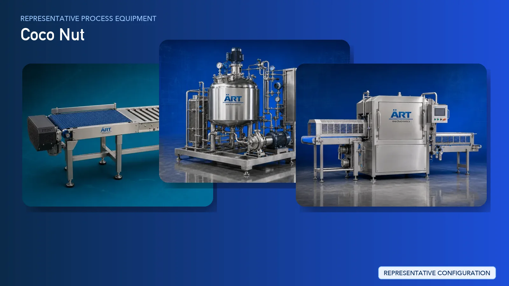
Coco Nut
Coconut processing is a major agro-based industry where raw coconuts are processed to obtain clean coconut kernels for…
View details →
Fox Nut (MAKHANA)
Foxnut (makhana) processing is a specialized agro-processing industry where raw foxnut seeds are transformed into…
View details →
Almond Processing Plant & Machinery Solutions
Almond processing is a high-value segment in the global dry fruit industry where raw almonds (in-shell) are processed…
View details →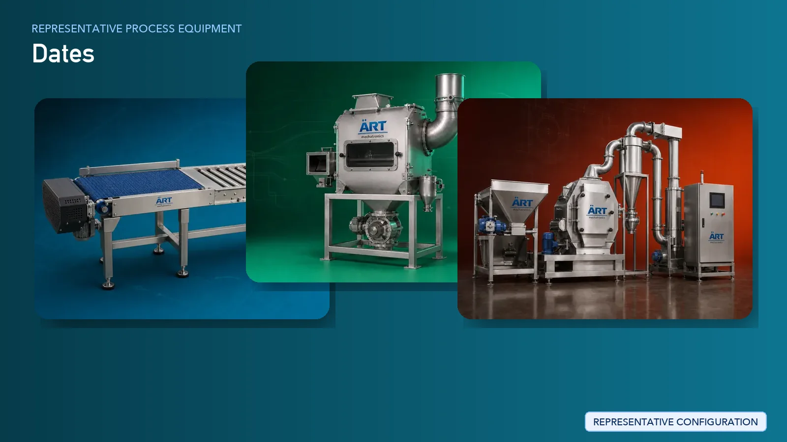
Dates Processing Plant & Machinery Solutions
Dates processing is a major segment in the global dry fruit and food industry, especially in the Middle East and…
View details →
Wal Nut
Walnut processing is a high-value segment in the global dry fruit industry where raw walnuts (in-shell) are processed…
View details →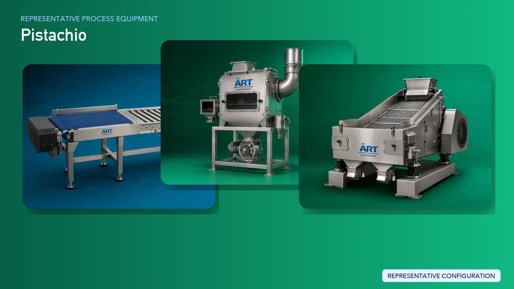
Pistachio Processing Plant & Machinery Solutions
Pistachio processing is a high-value segment in the global dry fruit industry where raw pistachios (in-shell) are…
View details →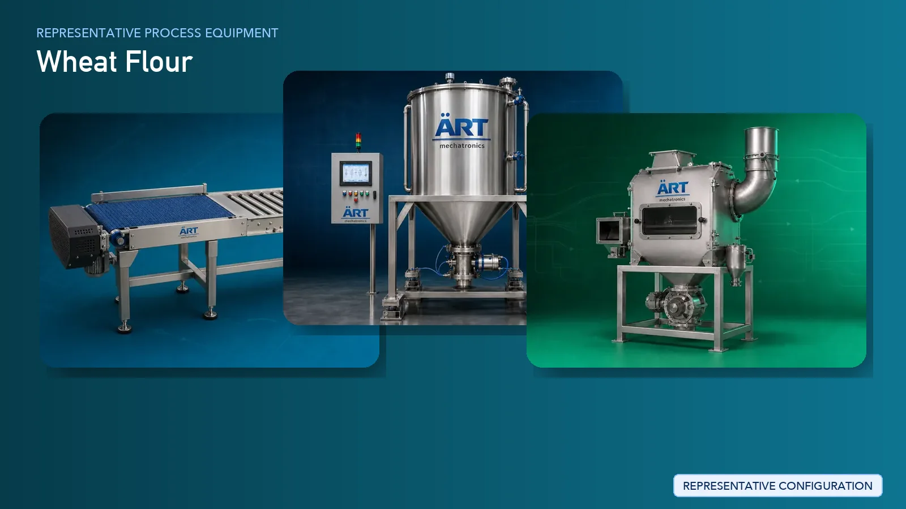
Wheat Flour
Flour milling is one of the most essential industries globally, producing products such as wheat flour (atta), refined…
View details →
Corn & Maize Flour
Corn (maize) flour processing is a major segment in the global food and agro-processing industry, producing products…
View details →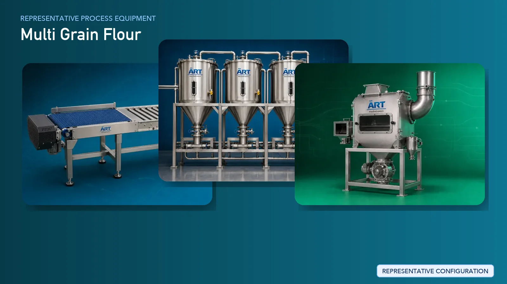
Multi Grain Flour
Multigrain flour processing is a rapidly growing segment in the global food industry, driven by increasing demand for…
View details →
Grains
Grain processing units play a critical role in the agricultural supply chain by procuring raw grains directly from…
View details →
Pulses Processing Plant & Machinery Solutions
Pulses processing, commonly known as dal milling, is a critical segment in the global agro and food processing…
View details →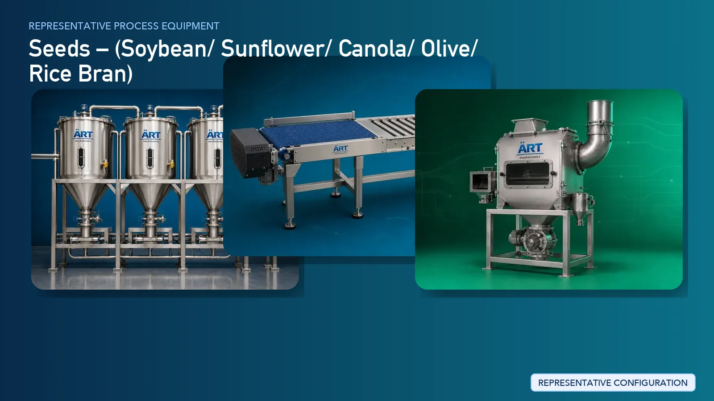
Seed Processing Plant & Machinery Solutions
Seed processing is a crucial segment in the agro and edible oil industry, involving the preparation of oilseeds such…
View details →
Edible Oil -
Edible oil processing is one of the most critical industries in the global food supply chain, producing oils from…
View details →
Rice Processing Plant & Machinery Solutions
Rice processing is one of the most essential agro-processing industries globally, converting raw paddy into clean,…
View details →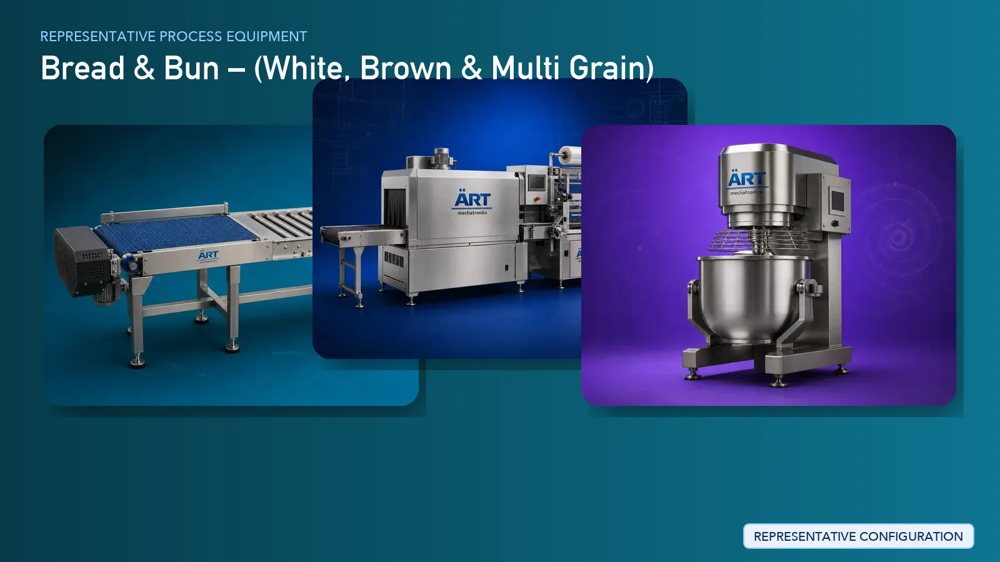
Bread & Bun
Bread manufacturing is one of the most essential segments in the global bakery industry, producing products such as…
View details →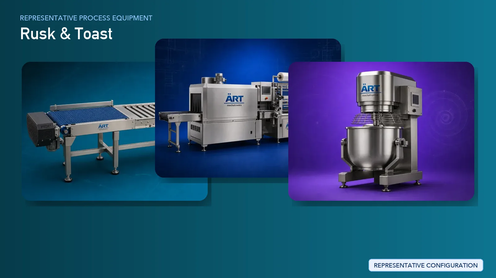
Rusk & Toast
Rusk, also known as toast biscuit, is a popular bakery product known for its long shelf life, crisp texture, and wide…
View details →
Biscuit & Cookies
Biscuit and cookie manufacturing is a major segment in the global food and FMCG industry, producing a wide range of…
View details →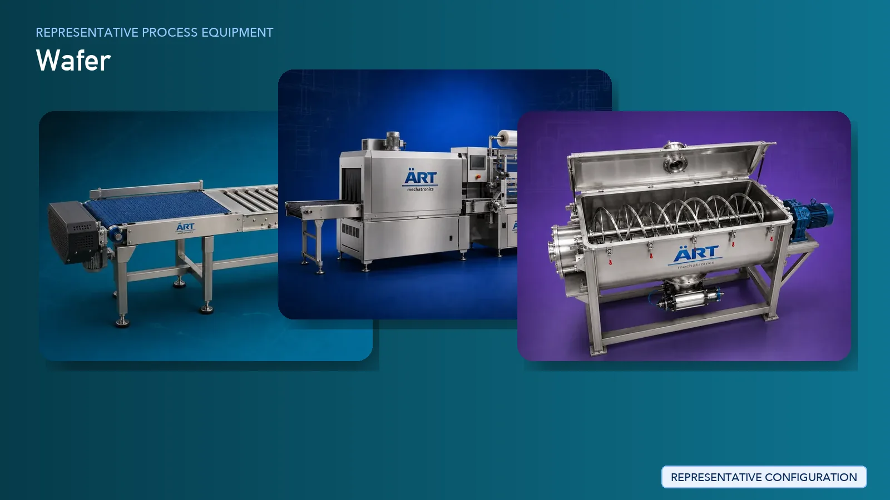
Wafer
Wafer biscuits are a highly popular snack product known for their light, crispy texture and layered cream-filled…
View details →
Chocolate
Chocolate bar manufacturing is a premium segment in the global confectionery industry, producing products such as milk…
View details →
Cake Manufacturing Plant & Machinery Solutions
Cake manufacturing is a fast-growing segment in the global bakery and FMCG industry, producing products such as fruit…
View details →
Energy Bar
Energy bars and protein bars are among the fastest-growing segments in the global health and nutrition industry. These…
View details →
Peanut Butter
Peanut butter manufacturing is a fast-growing segment in the global health food and FMCG industry, producing smooth,…
View details →
Honey Processing Plant & Machinery Solutions
Honey processing is a high-value segment in the natural food and FMCG industry, where raw honey collected from…
View details →
Syrup Manufacturing Plant & Machinery Solutions
Syrup manufacturing is a key segment in the global food and beverage industry, producing products such as chocolate…
View details →Ketchup & Sauce
Ketchup and sauce manufacturing is a major segment in the global food and FMCG industry, producing products such as…
View details →
Spread, Dips & Dressing
Dips, spreads, and dressings are rapidly growing segments in the global food and FMCG industry, including products…
View details →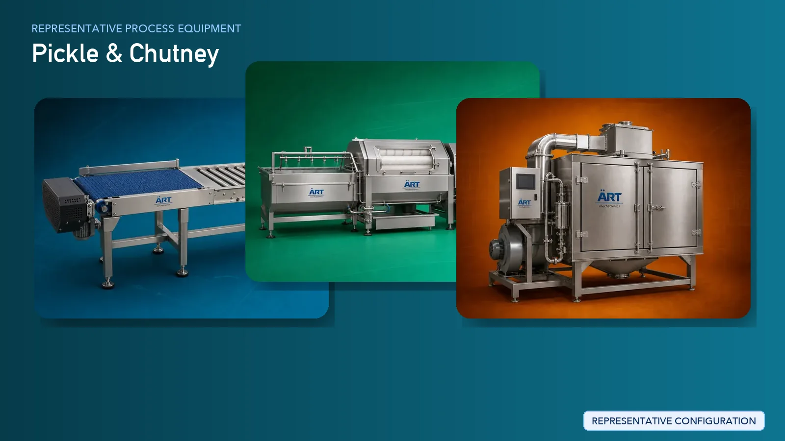
Pickle & Chutney
Pickle and chutney manufacturing is a well-established segment in the global food processing industry, producing…
View details →
Dairy
Dairy processing is a highly advanced and essential sector in the global food industry, involving the transformation…
View details →Coffee Processing Plant & Machinery Solutions
Coffee processing is a highly advanced segment in the global beverage industry, producing products such as instant…
View details →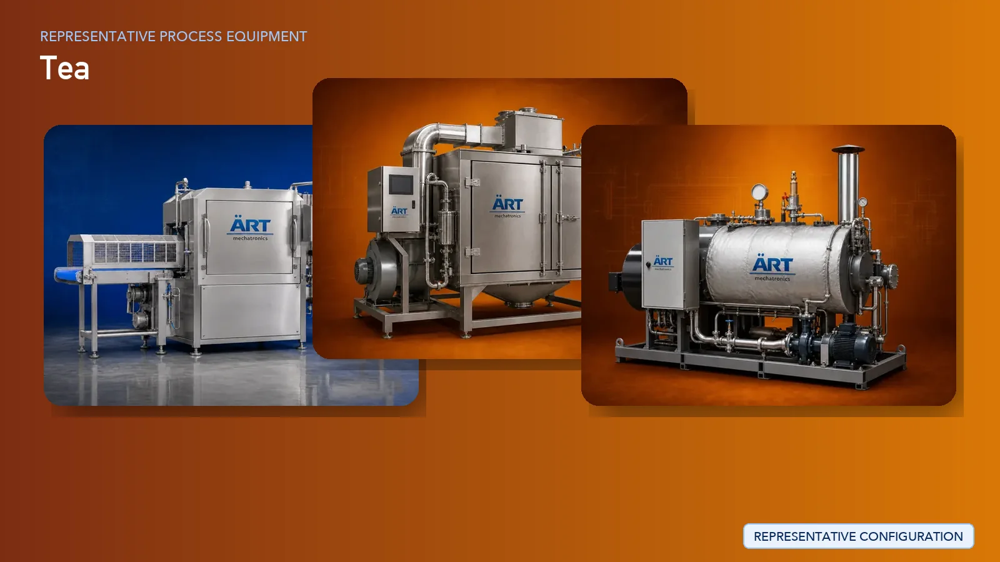
Tea Processing Plant & Machinery Solutions
Tea processing is one of the most established and high-volume industries in the global beverage sector, producing…
View details →
Green Tea & Flavoured Tea
Green tea and flavored tea processing is a rapidly growing segment in the global beverage and wellness industry,…
View details →
Cocoa & Hot Chocolate
Cocoa powder and hot chocolate manufacturing is a premium segment in the global food and beverage industry, producing…
View details →
Milk Powder
Milk powder manufacturing is a highly advanced segment in the dairy industry, producing products such as skim milk…
View details →
Premix Powder
Premix powder manufacturing is a fast-growing segment in the global beverage and FMCG industry, producing products…
View details →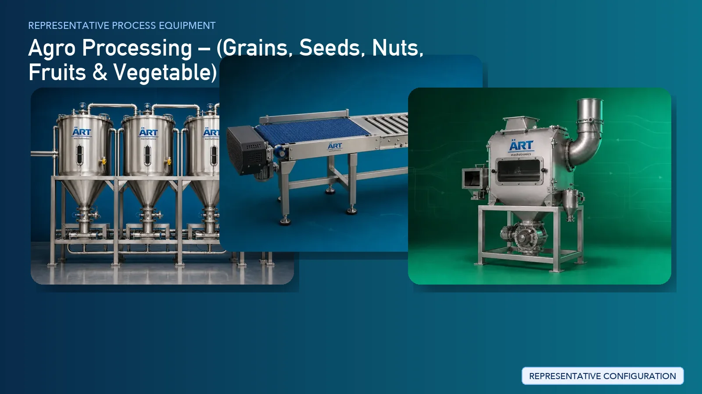
Agro Processing
Agro processing is the backbone of the global food industry, involving the transformation of raw agricultural produce…
View details →
Food Processing
Food processing is a large-scale industrial sector that transforms raw materials such as fruits, vegetables, chicken,…
View details →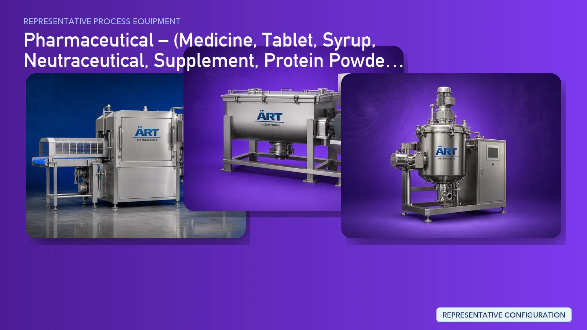
Pharmaceutical
Pharmaceutical and nutraceutical processing is a highly regulated and precision-driven industry, producing products…
View details →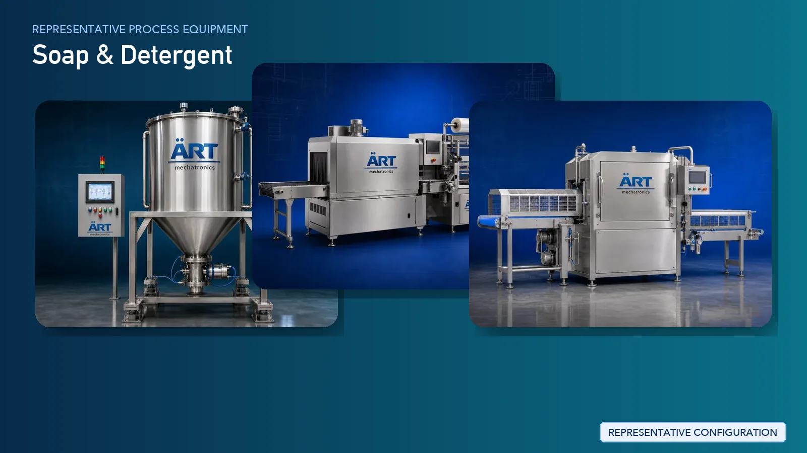
Soap & Detergent
Soap and detergent manufacturing is one of the largest segments in the global FMCG industry, producing products such…
View details →
Perfume & Essential Oil
Perfume manufacturing is a premium segment in the global personal care and luxury FMCG industry, producing products…
View details →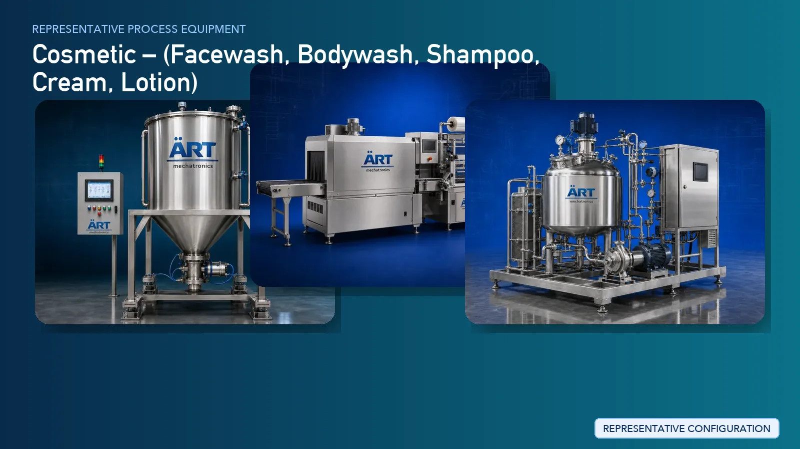
Cosmetic
Cosmetic manufacturing is a fast-growing segment in the global personal care and FMCG industry, producing products…
View details →
Chemical Manufacturing Plant & Machinery Solutions
Chemical manufacturing is a foundational industry serving multiple sectors including FMCG, pharmaceuticals,…
View details →
Plastic Recycling
Plastic recycling is a rapidly growing industrial sector focused on converting plastic waste into reusable raw…
View details →
Plastic
Plastic product manufacturing is a major industrial sector producing a wide range of products such as plastic…
View details →
Pellet -
Pellet manufacturing is a rapidly growing sector in the renewable energy and industrial fuel industry, producing…
View details →
Paint Manufacturing Plant & Machinery Solutions
Paint manufacturing is a major segment in the global chemical and construction industry, producing products such as…
View details →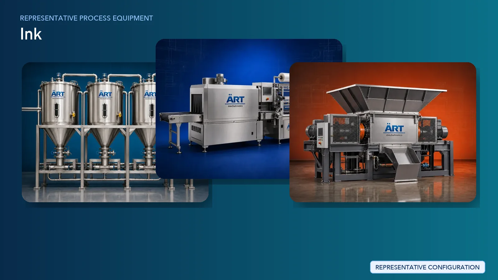
Ink Manufacturing Plant & Machinery Solutions
Ink manufacturing is a specialized segment in the chemical and printing industry, producing products such as printing…
View details →
Pigment Powder
Pigment manufacturing is a critical segment in the chemical industry, producing color pigments used in paints, inks,…
View details →
Iron & Steel
The iron and steel industry, along with aluminum and metal processing sectors, forms the backbone of fabrication,…
View details →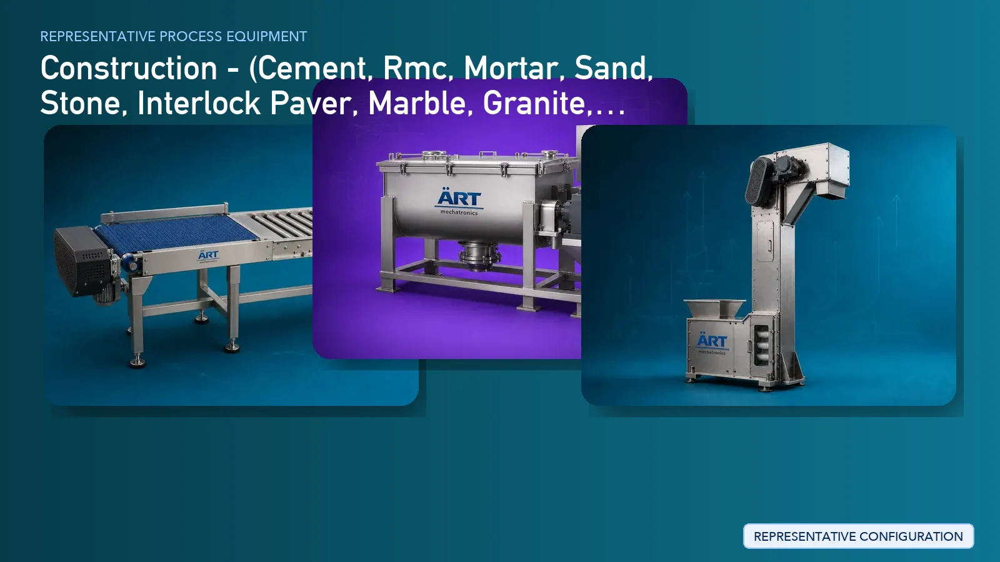
Construction -
The construction materials industry is one of the largest and most critical sectors globally, supplying materials such…
View details →
Hospitality Industry Engineering Solutions
The hospitality industry—including hotels, resorts, malls, hospitals, commercial complexes, and high-rise…
View details →
Dust Collection System & Pollution Control Equipment
Industrial dust collection and pollution control systems are essential across almost every manufacturing sector to…
View details →
Material Handling Equipments
Material handling systems are the backbone of modern industrial operations, enabling the efficient movement, transfer,…
View details →
Packaging Machines & Automation Systems
Packaging is a critical stage in every manufacturing process, ensuring product safety, shelf life, branding, and…
View details →No direct match? Tell us about your industry and process. Ask us on WhatsApp →